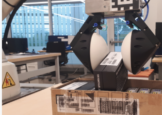
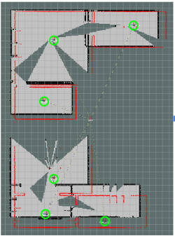
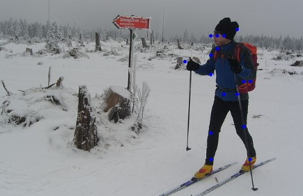
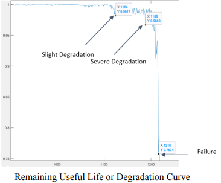
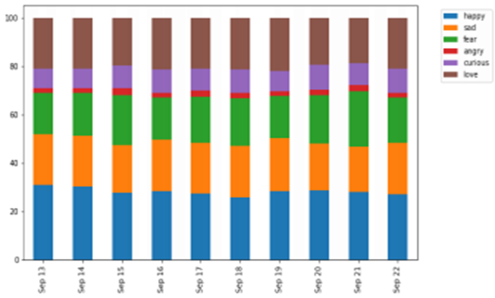
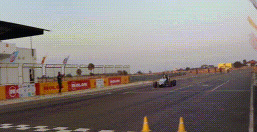

I enjoy working at the forefront of technology, where a lot is yet to be solved. Waking up everyday, thinking that we have a lot more to achieve than what we already did, forms my definition of growth.
Most recently, I have been working on some exciting Vision problems in the Autonomous Vehicle space at Toyota North America.
I would love to talk about projects and opportunities. Feel free to hit me up via email!
Work Experience

Toyota North America
Teaching cars to see in 3D. I pull real-world depth out of a single camera with the latest models, shrank a 10B-parameter driving assistant down to 2B so it talks to drivers in real time on edge hardware, and prototyped connected cars that team up to spot suspicious activity.
Magna International
Gave industrial robots a sense of where things are. I built deep-learning 6D pose estimation from RGB-D data and wired it into a UR10 arm that picks parts out of bins on its own.
University of Michigan
Tracking the objects cameras struggle to see. I taught PoseRBPF new tricks so it can follow glass and other transparent objects through video.
Enphase Energy
Took solar-home hardware from drawing board to production, and wrote Python tooling that catches energy-monitoring failures automatically.
Education
University of Michigan - Ann Arbor
A perfect 4.0 while diving deep into Computer Vision, Machine Learning, Mobile Robotics and Self-Driving Cars.
Indian Institute of Technology Roorkee
Mechanical engineering roots with a 9.25 GPA, picking up programming, algorithms and simulation along the way.
Selected Projects

Vision for Object Manipulation
Can one touch sensor stand in for another? I used contrastive learning, VQ-VAEs, Transformers and GANs to translate between visio-tactile sensors, so a robot only needs one.

Pose Tracking
Following see-through objects in full 6D, with PoseRBPF upgraded to detect them better.

Collaborative SLAM
Many robots, one map. Multi-robot SLAM in ROS with smarter map merging powered by OpenCV.
Github
ViTPose Implementation
Vision Transformers that find human poses even in low-resolution images.
Github
Predictive Modeling
Listening to bearings before they break: signal processing and ML that detect faults and predict remaining life.

Emotion Detection
Reading the mood of a pandemic by sorting images and tweets into emotions to surface mental-health struggles during COVID-19.
Github
Formula Student
Suspension and vehicle-dynamics models for IIT Roorkee Motorsports' electric race car, which finished 3rd in India at Formula Green 2020.
YouTubeAwards/Academic Achievements
- Selected for E3 (EPFL Excellence in Engineering) Fellowship-2021 at EPFL, Switzerland
- Selected for NTU India Connect Program-2020 to carry out summer internship at NTU Singapore
- Cleared KVPY (Kishore Vaigyanik Protsahan Yojana) with 99.5 percentile and awarded KVPY Fellowship
- Among top 700 students in India to receive National Talent Search Examination Scholarship
- Cleared Joint Entrance Examination (JEE) with 99.93 percentile in 2017
Publications
-
Ucar, S., Muralidharan, H., & Shukla, A. (2026). Is this a Suspicious Activity? Connected Vehicles Help Each Other. 2026 IEEE Vehicular Networking Conference (VNC), 1-2. IEEE Xplore
-
Shukla, A., Cao, X., Liu, Y., Takeuchi, Y., & Sisbot, A. (2026). Ensemble of Experts for Generating Digital Parking Maps from Remote Sensing Images. WCX SAE World Congress Experience. SAE Mobilus
-
Kamaliya, P. K., Shukla, A., Upadhyay, S. H., & Mallikarachchi, H. M. Y. C. (2022). Analysing wrinkle interaction behaviour with Z-fold crease pattern in thin-film planar membrane reflector. International Journal of Solids and Structures, 254-255, 111902. https://doi.org/10.1016/j.ijsolstr.2022.111902